승강기산업기사 (2002-03-10 기출문제)
1과목: 승강기개론
1. 상부틈과 피트의 깊이는 무엇으로 결정하는가?
- 정격속도
- 정격하중
- 완충기 높이
- 카의 크기
(정답률: 83%)

2. 균형추에도 비상정지장치를 설치하여야 할 경우는?
- 균형추 하부의 완충기 설치를 생략해야 할 구조일 때
- 적재하중이 4000kg이상의 무기어식 엘리베이터일 때
- 승강로 하부의 피트밑에 창고나 사무실이 있을 때
- 속도가 300m/min이상의 고속 엘리베이터일 때
(정답률: 81%)
3. 가이드레일 규격의 호칭은 마무리 가공전 소재의 1m당의 중량을 라운드 번호로 하여 무엇을 붙여서 사용하는가?
- M
- L
- K
- F
(정답률: 82%)
4. 승강로 구조에 대한 기준으로 적합하지 않은 것은?
- 승강로의 벽 및 개구부는 방화상 지장이 없는 구조로 하여야 한다.
- 승강로 상단은 콘크리트 또는 철구조물로 되어야 한다.
- 승강로에 엘리베이터와 관련없는 구조물을 설치할 경우에는 엘리베이터 승강에 지장이 없어야 한다.
- 승강로 내부는 엘리베이터의 승강에 지장이 없는 구조로 되어야 한다.
(정답률: 70%)
5. 도어 잠김장치에 관한 설명 중 틀린 것은?
- 카 도어시스템의 안전장치이다.
- 승장 도어의 안전장치로 중요한 기능을 갖는다.
- 외부에서 잠김을 풀 경우 특수한 전용키를 사용하여야 한다.
- 문이 닫혀 있지 않으면 엘리베이터 운전이 불가능 하도록 구성되어 있다.
(정답률: 64%)
6. 즉시작동형 비상정지장치의 적용 속도범위는 몇 m/min 이하인가?
- 30
- 45
- 60
- 90
(정답률: 63%)
7. 유압승강기를 보수 점검할 때 안전상 필요한 밸브는?
- 역저지밸브
- 유량제어밸브
- 릴리프밸브
- 스톱밸브
(정답률: 74%)
8. 다음 설명 중 옳지 않은 것은?
- 2차소방스위치를 작동시켰을 때 카도어는 반드시 열린 상태에서 주행하여야 한다.
- 도어머신에 사용되는 전동기는 주로 직류전동기가 많이 사용된다.
- 화물용 및 침대용 엘리베이터에는 사이드 오픈방식의 도어가 사용된다.
- 기계실은 고도제한 등의 이유로 승강로 하부에 설치될 수 있다.
(정답률: 63%)
9. 10인승 정도의 승객용 엘리베이터에는 굵기가 몇 mm 인 로프가 주로 사용되는가?
- 6 또는 8
- 10 또는 12
- 14 또는 16
- 20 또는 22
(정답률: 61%)
10. 카의 문지방과 승강로 벽과의 틈새는 몇 cm 이하로 하는가?
- 12.5
- 13.5
- 14.5
- 15.5
(정답률: 64%)
11. 승객용 엘리베이터의 주로프로 사용되는 로프의 안전률은 얼마 이상인가?
- 4
- 6
- 8
- 10
(정답률: 78%)
12. 중.소형 건물에서 정전시에 대비하는 비상발전 전원장치 를 하지 않고, 다른 장치를 하여 정전사고시에 대신 사용 하도록 하는 장치는?
- 파킹장치
- 구출 운전장치
- 신호장치
- 안전장치
(정답률: 72%)
13. 비상용승강기에서 기준층의 호출버튼을 동작시켜 카를 호출하는 비상호출운전시 정상적으로 작동되어야 하는 장치는?
- 카내 비상정지스위치(E-STOP)
- 용량초과 감지장치(OVER LOAD)
- 세이프티 슈(SAFETY SHOE)
- 출입문 광전스위치(SAFETY RAY)
(정답률: 60%)
14. 로프의 꼬임형태 중 일반적으로 아파트 등에 많이 사용 하는 것은?(오류 신고가 접수된 문제입니다. 반드시 정답과 해설을 확인하시기 바랍니다.)
- 보통 Z 꼬임
- 보통 S 꼬임
- 랭그 Z 꼬임
- 랭그 S 꼬임
(정답률: 41%)
15. 문짝수는 2 이고 문은 가로열기 문이다. 이것을 기호로 나타낸 것은?
- 1S
- 2S
- 1CO
- 2CO
(정답률: 77%)
16. 승강기의 착상 오차는?
- 승강기의 속도에 비례하여 감소한다.
- 승강기의 속도에 비례하여 증대한다.
- 승강기의 속도의 제곱에 비례하여 감소한다.
- 승강기의 속도의 제곱에 비례하여 증대한다.
(정답률: 49%)
17. 속도가 30m/min인 엘리베이터에 가장 많이 사용되는 제어방식은?
- 교류 일단 속도제어
- 교류 이단 속도제어
- 교류 궤환 전압제어
- 가변전압 가변주파수 제어
(정답률: 69%)
18. 유압식 엘리베이터에서 도르래의 직경은 주로프 직경의 몇 배 이상으로 하여야 하는가?
- 10
- 20
- 30
- 40
(정답률: 63%)
19. 기계실을 설치하는 방식의 하나인 베이스먼트 방식(bacement type)은 승강로의 어느 쪽에 설치하는 것을 말하는가?
- 승강로 바로 위
- 승강로 바로 아래
- 승강로 위쪽 옆방향
- 승강로 아래쪽 옆방향
(정답률: 61%)
20. 록 다운(lock down) 비상멈춤장치는 속도가 얼마 이상인 엘리베이터에는 반드시 설치하여야 하는가?
- 120m/min이상
- 160m/min이상
- 200m/min이상
- 240m/min이상
(정답률: 72%)
2과목: 승강기설계
21. 조속기의 종류가 아닌 것은?
- 롤 세이프티(Roll Safety)형
- 플라이 볼(Fly Ball)형
- 세이프티 디스크(Safety Disc)형
- 디스크(Disc)형
(정답률: 71%)
22. 4극, 60Hz, 380V의 3상 유도전동기가 입력 전류 10A, 역률 85%, 효율 85%, 슬립 3%로 운전 중이다. 회전속도와 출력은 각각 얼마인가?
- 회전속도: 1800rpm, 출력: 5.6㎾
- 회전속도: 1800rpm, 출력: 4.76㎾
- 회전속도: 1746rpm, 출력: 5.6㎾
- 회전속도: 1746rpm, 출력: 4.76㎾
(정답률: 41%)
23. 적재하중이 2000kg이고 속도는 60m/min일 때 전동기 용량은 몇 kW 인가? (단, 종합효율 및 오버밸런스율은 각각 50%이다)
- 10
- 15
- 20
- 25
(정답률: 60%)
24. 엘리베이터의 조명전원을 설계할 때 인입선의 굵기 산정에 포함되지 않아도 되는 것은?
- 전선의 기계적 강도
- 전선로의 허용전류
- 허용전압강하
- 누설전류
(정답률: 70%)
25. 플런져 여유 스트로크에 의한 카의 이동거리가 20cm인직접식 유압 엘리베이터의 상부틈은 최소 몇 cm 인가? (단, 카의 정격속도는 45m/min이다.)
- 60
- 63
- 80
- 83
(정답률: 25%)
26. 즉시작동형 비상정지장치를 설계할 때 정격속도 45m/min, 적용하중 2000kg, 정지거리 70cm일 때 비상정지장치가 작동할 때 흡수하는 에너지는 몇 kg.m 인가?
- 1400
- 1457
- 2066
- 2080
(정답률: 45%)
27. 장애인용 엘리베이터에 대한 설계방법으로 옳지 않은 것은?
- 모든 조작스위치는 바닥으로부터 0.8m이상 1.2m 이하에 있도록 설계할 것
- 출입문의 너비를 0.9m이상으로 설계할 것
- 엘리베이터 밖의 바닥과 엘리베이터 바닥사이의 틈의 너비는 10cm이하가 되도록 설계할 것
- 카 출입문의 마주보는 벽면에는 거울을 설치할 것
(정답률: 73%)
28. 감시반의 기능이 아닌 것은?
- 경보
- 통신
- 분석
- 고장처리
(정답률: 65%)
29. F.G.C형 비상정지장치에 관한 설명으로 틀린 것은?
- 점차작동형 비상정지장치의 일종이다.
- 레일을 죄는 힘은 동작시부터 정지시까지 일정하다.
- 구조가 간단하나 복귀가 어렵고 설치공간이 커야한다.
- 속도 60m/min 이상에 사용된다.
(정답률: 63%)
30. 원형코일 스프링의 설계에 이용되는 식 중 비틀림응력을 구하는 식은
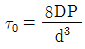
이다. 이 때 P에 해당되는 것은? (단, d는 재료의 지름, D는 코일의 평균지름이다.)- 스프링 지수
- 스프링에 걸리는 하중
- 스프링에 저축된 에너지
- 스프링의 운동부분의 중량
(정답률: 72%)
31. 브레이크의 용량을 계산할 때 직접적인 관련이 없는 요소는?
- 마찰계수
- 브레이크 드럼의 속도
- 브레이크 제동압력
- 브레이크 드럼의 지름
(정답률: 54%)
32. 로프식 엘리베이터에서 카가 최하층에 수평으로 정지하고 있을 때 카와 완충기와의 최대 허용거리는 몇 mm 인가?
- 150
- 300
- 600
- 900
(정답률: 49%)
33. 다음 중 유압엘리베이터의 피트를 최소로 적용한 것은?
- 1000mm
- 1250mm
- 1500mm
- 1750mm
(정답률: 52%)
34. 가이드 레일의 호칭은 무엇으로 하는가?
- 허용응력
- 단위길이 1m당의 중량
- 인장강도
- 파단강도
(정답률: 75%)
35. 호텔의 경우 엘리베이터의 수용능력(1회 왕복에 있어서의 카에 타는 인원)을 산정할 때 승객수는 일반적으로 어떻게 가정하여 정하는가?
- 상향, 하향을 같이 잡고, 카 정원은 모두 50%로 가정한다.
- 상향, 하향을 같이 잡고, 카 정원은 모두 100%로 가정한다.
- 상향일 때는 카 정원은 100%, 하향일 때는 50%로 가정한다.
- 상향일 때는 카 정원은 50%, 하향일 때는 100%로 가정한다.
(정답률: 44%)
36. 그림은 2:1로핑을 나타낸 것이다. 설명이 잘못된 것은?
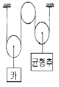
- 로프 장력은 부하측 하중의 1/2이다.
- 부하측의 속도는 로프속도의 1/2 이 된다.
- 2:1로핑 싱글랩(SINGLE WRAP)방식이다.
- 1:1로핑에 비해 로프의 수명은 짧아지나 총합효율은 증가하는 이점이 있다.
(정답률: 53%)
37. 카 레일용 브라켓트에 적합하지 않은 것은?
- 구조 및 형태는 레일을 지지하기에 견고하여야 한다.
- 사다리형 브라켓트의 경사부 각도는 15∼30도로 제작한다.
- 벽면으로부터 1000mm이하로 설치하여야 한다.
- 콘크리트에 대하여는 앵카볼트로 견고히 부착하여야 한다.
(정답률: 70%)
38. 교류에 대한 속도제어 방법 중 전압과 주파수를 동시에 변환시켜 제어하는 교류 제어방식은?
- 교류1단 제어
- 교류2단 제어
- 교류 궤환제어
- 가변전압 가변주파수 제어
(정답률: 72%)
39. 비상용 엘리베이터의 예비전원은 정전후 몇 초이내에 동작되어야 하는가?
- 30
- 60
- 90
- 120
(정답률: 75%)
40. 전동기 주회로에 380V의 전압이 사용될 때 절연저항은 몇 M牆 이상인가?
- 0.⑤
- 0.1
- 0.2
- 0.3
(정답률: 65%)
3과목: 일반기계공학
41. 어떤 펌프가 매분 3000회전으로 전양정 150[m]에 대하여 0.3[m/sec]인 수량(水量)을 방출한다. 이것과 상사(相似)인 것으로 치수가 2배인 펌프가 매분 2000회전이고 다른 것은 동일한 상태로 운전될 때 전양정은 약 몇 m 인가?
- 201
- 224
- 243
- 267
(정답률: 35%)
42. 스패너를 사용하지 않고 손으로 조일수 있는 너트는?
- 캡 너트
- 나비 너트
- 홈 붙이 너트
- 육각 너트
(정답률: 77%)
43. 다음 주철 중 인장강도가 가장 높은 주철은?
- 합금 주철
- 가단 주철
- 고급 주철
- 구상흑연 주철
(정답률: 73%)
44. 다음 공작기계 중 부속장치로 척, 센터, 돌림판, 돌리개, 심봉, 방진구 등이 있는 것은?
- 선반
- 플레이너
- 보링머신
- 밀링머신
(정답률: 67%)
45. 유압구동의 장점에 관한 설명 중 틀린 것은?
- 주기적 운동을 비교적 간단한 장치로 할 수 있다.
- 원격조작 및 자동조작이 가능하다.
- 유압구동에서는 무단변속이 가능하다.
- 온도변화에 의한 정밀도의 영향이 없다.
(정답률: 75%)
46. 다음 중에서 터어보형(Turbo type) 펌프에 속하지 않는 것은?
- 왕복식 펌프
- 원심식 펌프
- 축류식 펌프
- 사류식 펌프
(정답률: 62%)
47. 다음중 직선왕복운동을 회전운동으로 변화시키는 축은?
- 플렉시블 축
- 직선축
- 크랭크 축
- 중간축
(정답률: 74%)
48. 로울링 베어링을 미끄럼 베어링에 비교한 특징을 설명한 것이다. 다음 중 틀린 것은?
- 마찰이 적다.
- 시동 저항이 크다.
- 동력을 절약할 수 있다.
- 윤활유의 소비가 적다.
(정답률: 50%)
49. 두랄루민의 주요 성분 원소는?
- 알루미늄 - 구리 - 마그네슘 - 망간
- 알루미늄 - 니켈 - 규소 - 망간
- 알루미늄 - 구리 - 니켈
- 알루미늄 - 마그네슘
(정답률: 70%)
50. 연강봉의 지름이 10㎜이고 길이가 1m인 봉에 인장하중을 5 ton을 작용 시켰더니 1.02 m로 늘어났다면, 인장에 의한 세로변형률은 얼마인가?
- 0.0002
- 0.002
- 0.02
- 0.2
(정답률: 62%)
51. 연삭숫돌은 자동적으로 닳아 떨어져 나가서 새로운 날을 형성하므로 커터와 바이트처럼 연삭하지 않아도 되는데 이러한 현상을 무엇이라하는가?
- 자생작용
- 투루잉
- 글레이징
- 드레싱
(정답률: 73%)
52. 다음중 체결용 나사가 아닌 것은?
- 톱니나사
- 미터나사
- 유니파이 나사
- 관용나사
(정답률: 52%)
53. 동과 동합금에 관한 설명 중 틀린 것은?
- 황동은 구리와 아연의 합금이다.
- 인청동은 내식성, 내마모성을 필요로 하는 펌프부품, 캠, 축, 베어링 등에 사용된다.
- 청동은 구리와 주석의 합금이다.
- 전기 전도율이 알루미늄 다음으로 크다.
(정답률: 59%)
54. 다음 중 리벳 및 나사접합과 비교한 용접의 장점이라 할 수 없는 것은?
- 기밀유지가 향상된다.
- 가공모양을 자유롭게 할 수 있다.
- 재료 및 경비를 절감할 수 있다.
- 이음부의 검사가 비교적 쉽다.
(정답률: 53%)
55. 중공(中空)형의 목형(木型)을 주형이 지지할 수 있도록 목형에 만든 돌출부를 무엇이라고 하는가?
- 덧붙임(stop off)
- 코어 프린트(core print)
- 라운딩(Rounding)
- 목형 기울기(draft or taper)
(정답률: 69%)
56. 다음 그림과 같은 코일 스프링 장치에서 W 는 작용하는 하중이고, 스프링 상수를 K1, K2 라 할경우, 합성스프링 상수 K 를 나타내는 식은?
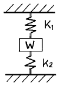
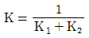
- K = K1 + K2
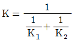
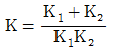
(정답률: 59%)
57. 다음 열처리 종류에서 재질을 경화시키는 것은?
- 뜨임(tempering)
- 불림(normalizing)
- 풀림(annealing)
- 담금질(quenching)
(정답률: 45%)
58. 어미자의 눈금이 1mm이고, 어미자 49mm를 50등분 하였다면 버니어 하이트게이지의 최소 측정값은?
- 0.01mm
- 0.02mm
- 0.025mm
- 0.⑤mm
(정답률: 65%)
59. 피치원 지름이 500mm, 잇수가 100개인 기어의 모듈은 얼마인가?
- m = 2
- m = 3
- m = 4
- m = 5
(정답률: 70%)
60. 피치 3 ㎜ 인 2줄 나사의 리드는?
- 1.5 ㎜
- 2 ㎜
- 3 ㎜
- 6 ㎜
(정답률: 72%)
4과목: 전기제어공학
61. 그림과 같은 계전기 회로를 점선안(C,D,E)에 논리소자를 이용하여 변환시킬 때 사용되지 않는 소자는?
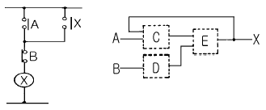
- AND
- OR
- NOT
- NOR
(정답률: 40%)
62. 전압 1.5V, 내부저항 0.2Ω인 전지 5개를 직렬로 접속하면 전전압은 몇 V 가 되는가?
- 0.3
- 1.5
- 3.0
- 7.5
(정답률: 67%)
63. 주파수변환기를 사용하여 회전자의 슬립주파수와 같은 주파수의 전압을 발생시킨 것을 슬립링을 통해 회전자 권선에 공급하여 속도를 바꾸는 제어방법은?
- 주파수변환법
- 2차저항법
- 2차여자법
- 가변전압가변주파수방식
(정답률: 49%)
64. R-L직렬회로에 100V의 교류전압을 가했을 때 저항에 걸리는 전압이 80V이었다면 인덕턴스에 유기되는 전압은 몇 V인가?
- 20
- 40
- 60
- 80
(정답률: 66%)
65. 서보기구의 조작부에 사용되지 않는 전동기는?
- 교류 서보전동기
- 스테핑모터
- 유압전동기
- 동기전동기
(정답률: 44%)
66. 그림과 같은 브리지회로에서 검류기 뀁에 전류가 흐르지 않는다면 저항 r5 의 값은 몇 Ω 인가? (단, 단위는 모두 Ω이다.)
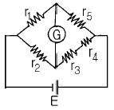
- r2(r3+r4)/r1
- r2r3r4/r1
- r1(r3+r4)/r2
- r1r3r4/r2
(정답률: 83%)
67. 그림은 일반적인 반파정류회로이다. 변압기 2차 전압의 실효값을 E[V]라 할 때 직류전류의 평균값은? (단, 변류기의 전압강하는 무시한다.)
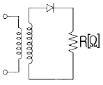
- E/R
- E/2R
- 2√2E/πR
- √2E/πR
(정답률: 53%)
68. 정전용량이 같은 두 개의 콘덴서를 직렬로 연결했을 때 합성용량은 병렬 연결했을 때의 몇 배인가?
- 1/4
- 1/2
- 2
- 4
(정답률: 58%)
69. 컴퓨터실의 온도를 항상 18℃로 유지하기 위하여 자동냉난방기를 설치하였다. 이 자동 냉난방기의 제어는?
- 정치제어
- 추종제어
- 비율제어
- 서보제어
(정답률: 61%)
70. 계전기 접점의 아크를 소거할 목적으로 사용되는 소자는?
- 바리스터(Varistor)
- 바렉터다이오드
- 터널다이오드
- 서미스터
(정답률: 67%)
71. 농형유도전동기의 기동법이 아닌 것은?
- 리액터기동법
- Y-Y기동법
- 전전압기동법
- 기동보상기법
(정답률: 68%)
72. 디지털 제어시스템의 폐루프 전달함수의 위상을 지연시키며, 시스템의 안정도에 영향을 주고, 이산신호가 연속 신호로 바뀌는 출력변환장치는?
- 전압-주파수변환기
- PＩD 제어기
- 제로-오더홀딩장치(Z.O.H)
- 계측용증폭기
(정답률: 40%)
73. 유도전동기의 1차 접속을 △에서 Y로 바꾸면 기동시의 1차전류는 어떻게 변화하는가?
- 1/3로 감소
- 1/√3로 감소
- 3 배로 증가
- 3배로 증가
(정답률: 66%)
74. 100V의 기전력으로 100Ｊ의 일을 할 때 전기량은 몇 C인가?
- 0.1
- 1
- 10
- 100
(정답률: 74%)
75. 블럭선도에서 신호의 흐름을 반대로 할 때, ⓐ에 해당 하는 것은?
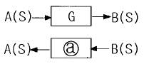
- G
- -G
- 1/G
- jωG
(정답률: 73%)
76. 동기화 제어변압기로 사용되는 것은?
- 싱크로변압기
- 앰플리다인
- 차동변압기
- 리졸버
(정답률: 63%)
77. 그림과 같은 유접점회로를 논리식으로 표현하면?
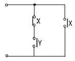
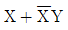
- XY
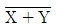
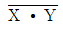
(정답률: 75%)
78. 그림은 VVVF를 이용한 속도 제어회로의 일부이다. 회로의 설명 중 옳은 것은?
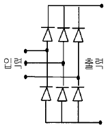
- 교류를 직류로 변환하는 정류회로이다.
- 교류의 PWM 제어회로이다.
- 교류의 주파수를 변환하는 회로이다.
- 교류의 전압으로 변환하는 인버터회로이다.
(정답률: 52%)
79. PI제어동작은 프로세스 제어계의 정상 특성 개선에 흔히 사용되는데, 이것에 대응하는 보상요소는?
- 지상보상요소
- 진상보상요소
- 동상보상요소
- 지상 및 진상보상요소
(정답률: 58%)
80. 피드백제어로서 서보기구에 해당하는 것은?
- 석유화학공장
- 발전기 정전압장치
- 선박의 자동조타
- 전철표 자동판매기
(정답률: 72%)